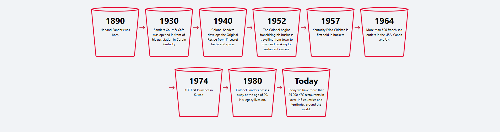
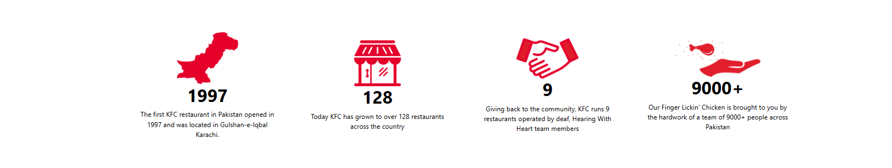

KFC entered Pakistan in 1997 and since then, it’s been a journey full of excitement and Finger Lickin’ goodness! The first KFC restaurant opened in Pakistan opened in Gulshan Iqbal, Karachi and now our Finger Lickin’ Chicken is available in 37 cities with over 128 restaurants! Being the most loved fast food chain in Pakistan, KFC leaves no stone unturned to provide its customers the most delicious chicken and an excellent dining experience.
WE PRIDE OURSELVES ON USING QUALITY HALAL CHICKEN AND
LOCAL INGREDIENTS FROM TRUSTED SUPPLIERS

History
It all started with Colonel Harland Sanders, the man who convinced the world by saying “We do chicken right!” Sanders took a great deal of time perfecting his iconic secret recipe of 11 herbs and spices, a legacy he’s brought to the world through KFC’s 10,000+ restaurants. Starting from outside of his gas station in Korbin, Kentucky to being a globally recognized face, we owe our success to the Colonel’s hard work and passion for sharing his love for chicken with the world!
The Story of World’s Best Chicken
Fast Facts about KFC Pakistan

is KFC’s pledge to give back to society. Over the years we have made it our mission to spread the message of hope, bringing positive change in the lives of people and providing better living standards. Mitao Bhook strengthens the community on the pillars of Education, Inclusion & Diversity.
Adopted 6 TCF schools since 2014 in Gadaap West, Muzaffargarh, Faisalabad, and Quetta, educating 1700+ students
Proudly running the Deaf Reach KFC Campus and providing education and training to 340 deaf students
Sponsoring higher education of 200+ students across HEC recognized universities in Pakistan
Supporting TEGS – KFC Campus to provide quality education to students in Lahore